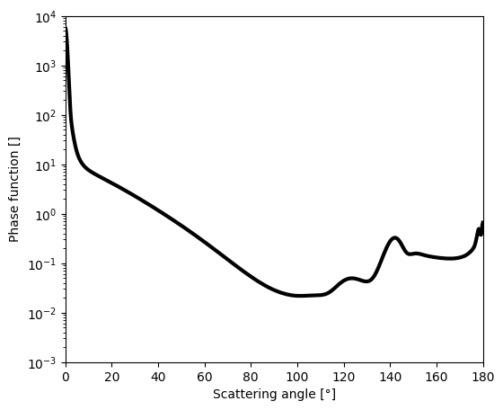
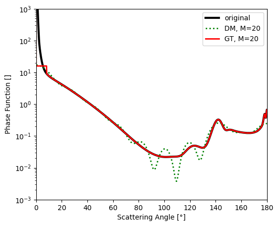
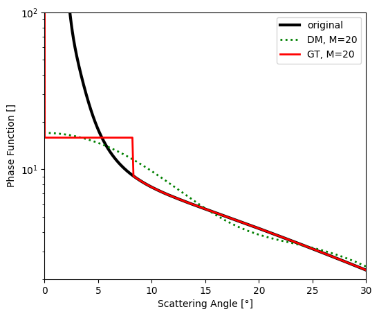
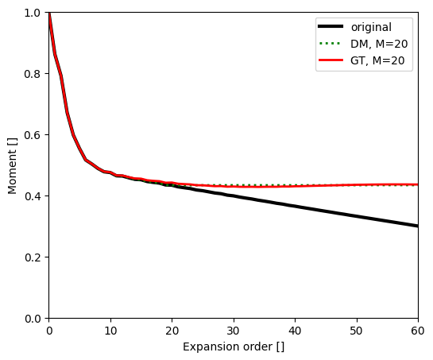
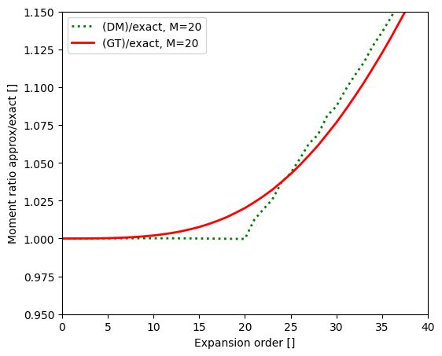

02 Validation Iwabuchi#
see: Iwabuchi, H., & Suzuki, T. (2009). Fast and accurate radiance calculations using truncation approximation for anisotropic scattering phase functions. Journal of Quantitative Spectroscopy and Radiative Transfer, 110(17), 1926-1939.
[1]:
%reload_ext autoreload
%autoreload 2
import os
from pathlib import Path
import numpy as np
from scipy.integrate import simpson, trapezoid
from pytrunc.phase import calc_moments
from pytrunc.truncation import delta_m_phase_approx, gt_phase_approx
from pytrunc.utils import integrate_lobatto
import matplotlib.pyplot as plt
import xarray as xr
from pytrunc.constant import DIR_ROOT
save_fig = False
Truncation approximation for the anisotropic phase function#
Get realistic water cloud phase function from mie calculation#
[2]:
# in the paper (Iwabuchi et al. 2009) water cloud at wl = 500 nm and reff = 8 um
# wc available in smartg auxdata: https://github.com/hygeos/smartg
# Follow smartg README to download auxdata,
# then create environemnt variable 'SMARTG_DIR_AUXDATA' where auxdata have been downloaded
# wc_path = Path(os.environ['SMARTG_DIR_AUXDATA']) / Path('clouds/wc_sol.nc')
# ds = xr.open_dataset(wc_path)
# pha_exact = ds['phase'].interp(reff=8, wav=500, method='linear').values[0, :]
# wc at the correct wavelength and effective radius avaible in pytrunc/data
ds = xr.open_dataset(DIR_ROOT / 'pytrunc' / 'data' / 'wc_wl500_reff8.nc')
theta = ds['theta'].values
pha_exact = ds["phase"].values[0,:]
method = 'lobatto'
# method = 'trapezoid'
# method = 'simpson' # use pair number for theta
INTEGRATORS = {
"simpson": simpson,
"trapezoid": trapezoid,
"lobatto": integrate_lobatto
}
integrate_m = INTEGRATORS[method]
# theta = np.linspace(0., 180., 18000)
# pha_exact = np.interp(theta, ds.theta.values, pha_exact)
# theta, _ = quadrature_lobatto(0., 180., 7201)
# pha_exact = np.interp(theta, ds.theta.values, pha_exact)
mu = np.cos(np.deg2rad(theta))
idmu = np.argsort(mu)
# renormalize depending on the chosen integration method
if method == 'lobatto':
sin_th = np.sin(np.deg2rad(theta))
pha_exact = (2. * pha_exact) / integrate_m(pha_exact*sin_th, np.deg2rad(theta))
else:
pha_exact = (2. * pha_exact) / integrate_m(pha_exact[idmu], mu[idmu])
plt.figure(figsize=(6,5))
plt.plot(theta, pha_exact, c='k', lw=3)
plt.yscale('log')
plt.ylim(ymin=1e-3, ymax=1e4)
plt.xlim(xmin=0, xmax=180)
plt.xlabel('Scattering angle [°]')
plt.ylabel('Phase function []')
[2]:
Text(0, 0.5, 'Phase function []')

Plot exact and approximated phase functions#
Reproduce Fig.1a
[3]:
m_max = 20
ds_dm = delta_m_phase_approx(pha_exact, theta, m_max, method=method)
f = float(ds_dm['f'].values)
ds_gt = gt_phase_approx(pha_exact, theta, f, method=method, th_tol=12)
plt.figure(figsize=(6,5))
plt.plot(theta, pha_exact, 'k', lw=3, label='original')
plt.plot(theta, ds_dm['phase_approx'], 'g:', lw=2, label=f'DM, M={m_max}')
plt.plot(theta, ds_gt['phase_approx'], 'r', lw=2, label=f'GT, M={m_max}')
plt.yscale('log')
plt.ylim(ymin=1e-3, ymax=1e3)
plt.xlim(xmin=0, xmax=180)
plt.legend()
plt.ylabel("Phase Function []")
plt.xlabel("Scattering Angle [°]")
if save_fig:
plt.savefig("iwabuchi_fig1a.png", dpi=200)
mu = np.cos(np.deg2rad(theta))
idmu = np.argsort(mu)
if method == 'lobatto':
print("integral(P_exact)=", integrate_m(pha_exact*np.sin(np.deg2rad(theta)),
np.deg2rad(theta)))
print("integral(P_approx_dm)=", integrate_m(ds_dm['phase_approx'].values*np.sin(np.deg2rad(theta)),
np.deg2rad(theta)))
else:
print("integral(P_exact)=", integrate_m(pha_exact[idmu], mu[idmu]))
print("integral(P_approx_dm)=", integrate_m(ds_dm['phase_approx'].values[idmu], mu[idmu]))
print("f =",f)
integral(P_exact)= 2.0
integral(P_approx_dm)= 2.0000675723515875
f = 0.43294807007378455

Zoom of previous plot#
Fig.1b
[4]:
plt.figure(figsize=(6,5))
plt.plot(theta, pha_exact, 'k', lw=3, label='original')
plt.plot(theta, ds_dm['phase_approx'], 'g:', lw=2, label=f'DM, M={m_max}')
plt.plot(theta, ds_gt['phase_approx'], 'r', lw=2, label=f'GT, M={m_max}')
plt.yscale('log')
plt.ylim(ymin=2, ymax=100)
plt.xlim(xmin=0, xmax=30)
plt.legend()
plt.ylabel("Phase Function []")
plt.xlabel("Scattering Angle [°]")
if save_fig:
plt.savefig("iwabuchi_fig1b.png", dpi=200)

Plot exact and approximated phase moments#
Fig.2a
[5]:
n_expan = 60
chi_exact = calc_moments(phase=pha_exact, theta=theta, m_max=n_expan, method=method, normalize=True)
chi_approx_dm = calc_moments(phase=ds_dm['phase_approx'].values, theta=theta, m_max=n_expan, method=method, normalize=True)
chi_approx_gt = calc_moments(phase=ds_gt['phase_approx'].values, theta=theta, m_max=n_expan, method=method, normalize=True)
exp_order = np.arange(61)
plt.figure(figsize=(6,5))
plt.plot(chi_exact, 'k', lw=3, label='original')
plt.plot(chi_approx_dm, 'g:', lw=2, label=f'DM, M={m_max}')
plt.plot(chi_approx_gt, 'r', lw=2, label=f'GT, M={m_max}')
plt.xlim(xmin=0, xmax = 60)
plt.ylim(ymin=0, ymax=1)
plt.legend()
plt.ylabel("Moment []")
plt.xlabel("Expansion order []")
if save_fig:
plt.savefig("iwabuchi_fig2a.png", dpi=200)

Plot moment ratio#
Fig.2b
[6]:
exp_order = np.arange(61)
plt.figure(figsize=(6,5))
plt.plot(chi_approx_dm/chi_exact, 'g:', lw=2, label=f'(DM)/exact, M={m_max}')
plt.plot(chi_approx_gt/chi_exact, 'r', lw=2, label=f'(GT)/exact, M={m_max}')
plt.xlim(xmin=0, xmax = 40)
plt.ylim(ymin=0.95, ymax=1.15)
plt.legend()
plt.ylabel("Moment ratio approx/exact []")
plt.xlabel("Expansion order []")
if save_fig:
plt.savefig("iwabuchi_fig2b.png", dpi=200)
